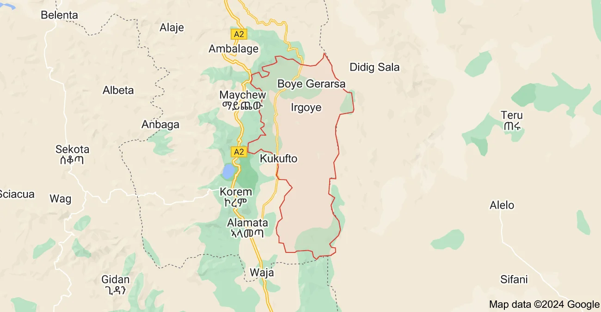

ወረዳታት(መኾኒ፣ማይጨው(ዞባ)፣እምባ ኣላጀ፣ራያ ዓዘዎ ራያ ጨርጨር፣ራያ ኣላማጣ፣ራያ ኮረም፣ራያ ቆቦ(ኣብ ትሕቲ ኣምሓራ ድመሓደር ከባቢ))ይሽፍን።
ራያ ኣብ ደቡብ ትግራይ ድነሆ ከባቢ ይኡ።
መኾኒ ፣ማይጨው፣ጨርጨር፣ ኣላማጣ፣ወጀራት(ዓድ ቓይሕ፣ደቡብ)፣ኮረም፣ዓዲሽሁ፣ዙርያ ያጠቃሊል።

Woredatat (Mekhoni, Mai Salt (Zoba), Mba Alaje, Raya Azewo Raya Finish, Raya Alamat, Raya Korem, Raya Kobo(Ab Humti Amhara Dmeder Area)). Raja is located in southern Tigray. It includes Mehni, Maisalt, Fabric, Alamata, Wojrat (Ad Quaih, South), Korum, Addishhu, Cirrhia.